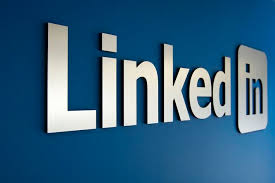
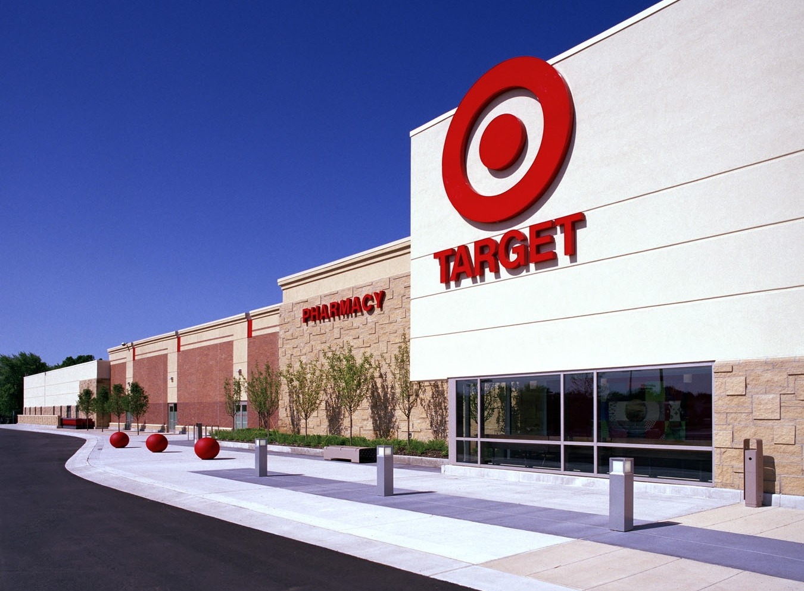
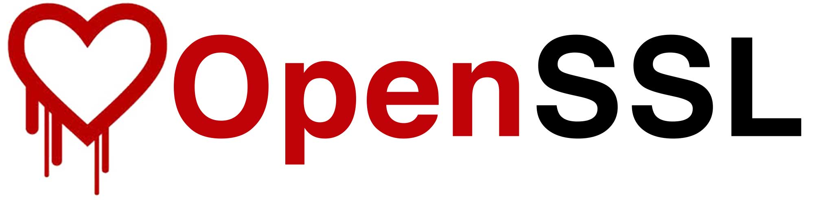
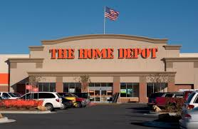

A Brief History of Data Security Failures
The Information Age (otherwise referred to as Computer Age or Digital Age) is happening right now - it’s what we live and experience every day. From the 1950s to the 1970s, technology was advancing with the use of digital computers and record keeping, and brought with it huge changes within digital computing and communication technology. The digital industry has created a society wherein knowledge is held to the utmost importance and is set within a high-tech global economy. With these sweeping changes, the Digital Age has also brought with it a new way to steal and thieve - by digitally hacking and breaching secure information. In the last decade, there have been almost 5,500 data breaches and hacks reported, meaning those are only the ones the public knows about. If averaged out, that means the last ten years have seen roughly 550 breaches a year, if not more. Some of the largest of these breaches are laid out below and are each discussed from a management, public relations, and computer science perspective.

June 5, 2012 - LinkedIn Data Breach
LinkedIn acknowledged a data breach where nearly 6.5 million user account passwords were stolen by Russian cyber-criminals and posted on a Russian password decryption forum later on that day. By the next morning, thousands of account passwords were available online in plain text.
-
Management
In response to this breach, LinkedIn immediately reported it to authorities, sent out password change emails to affected consumers, and created a blog for customers to get updates. In spite of all these administrative actions, LinkedIn was not the first to tell consumers of the breach, and many complained that the social media site took too long before informing the public - waiting over 12 hours before making a statement. In this instance, crisis management at LinkedIn needed to be changed and handled differently, in order to get on top of the attack before worse damage could be done as well as dealing with affected consumers and the public.
-
Public Relations
LinkedIn acted slowly in regard to the breach and with the apology, many thought it was a little too late. LinkedIn settled the data breach lawsuit for 1.25 million, paying back any monthly subscriber from March 15, 2006 to June 7, 2012. Several other personal lawsuits filed against LinkedIn were consolidated. With the settlement came the requirement of implementing data security protocols using industry standard encryption methods for at least 5 years. With other and more severe data breaches popping up everyday, LinkedIn’s breach is not nearly as talked about.
-
Technology
The passwords were stolen from LinkedIn using brute force methods, but the most shocking aspect of the theft was that the passwords which had been stored in an encrypted format were so easy to decrypt. Usually, an encrypted password would require a special key to understand. However, this key can be guessed by brute force mechanisms by computers capable of guessing thousands of keys per second. To combat this, it is considered standard practice in the computer security industry to apply what is called a salt to each password to make them harder to decrypt. It is considered a huge technological oversight that LinkedIn failed to use this technology that is considered standard and fairly rudimentary.

November 27 - December 15, 2013 - Target confirmed secure data hack
The breach occurred sometime around Black Friday and involved the theft of the information stored on the magnetic strips of cards used in all Target stores around the country. More than 40 million consumers had credit and debit card information stolen, and somewhere between 70 and 110 million consumers had their personal information (names, emails, mailing addresses) stolen as well. Authorities believed this breach would allow hackers to make fraudulent cards and use ATMs if pin data had also been compromised.
-
Management
As a result of this breach and stolen consumer data, Target agreed to a settlement of 10 million dollars wherein consumers affected by the breach could be awarded up to 10 thousand dollars. As part of the settlement, Target agreed, on a managerial and internal side, to strengthen its protection of consumer data by implemented new changes to security measures. Target put in place a protocol for responding to online threats, created a new position of Chief Information Security Officer, and is providing additional data security training to all employees.
-
Public Relations
Unfortunately for Target, their Public Relations made a bad situation worse. Target went public very quickly after the data breach which was an extremely premature decision as they were not aware the scope of the damage done. They miscalculated the number of customers affected by the breach and then went on to blame a third-party for the lack of security. Although companies never look great in the public eye after a data breach, the Target corporation could have handled the situation better and lessened the blow to their image. Instead, people found Target to be unorganized, confusing and even insensitive.
-
Technology
The data is believed to have been stolen by a hacker who managed to instal malware into Target's security and payments system. The malware would send all data given by a customer for a sale to a server that the hackers had access to, and then proceed with the sale as usual without throwing any red flags. However, as the data left Target's servers en route to the thiefs, Target's alarm response system fired off an alert exactly as it was built, but due in part to negligence on the part of Target's data security team, no one took notice.
June 5, 2013 - A British daily newspaper, The Guardian, reveals the leak of thousands of classified NSA documents released by NSA Contractor, Edward Snowden.
This event highlights two aspects of data vulnerabilities. The first is that insider information, such as the thousands of leaked NSA documents can be compromised by an “uncooperative” employee such as Edward Snowden. The second aspect is uncovered by the actual contents of the leaked data - the leaked documents revealed the extent to which the U.S. Government was going to get personal details of American citizens, such as the seizure of metadata of phone calls from Verizon and working closely with large tech companies to circumvent privacy measures like encryption of data. The issue was a huge PR nightmare for the U.S. Government who branded Edward Snowden as a traitor and even a terrorist, while Snowden was heralded by a large part of the American public as a national hero who upheld ideals of American freedom even at the cost of his own livelihood.
-
Management
The hostile reactions of the U.S. and British Governments towards Snowden after this reveal led to much speculation by the general public on the work of intelligence agencies. This reaction was followed by many avoidance tactics by these governments, instead of facing the issue head on and trying to alleviate suspicion and worry in the population. This leak was a major breaking point for many citizens as they had not known the lengths to which intelligence agencies were going in order to gain information on American citizens. It was made clear that having this information was not the issue, more so that it was gained by illicit methods and backdoor channels, without being properly authorised or legally sound. Although this issue will not go away overnight and has raised suspicions, governments should face them more head-on and in the public eye, in order to gain back the trust of the people.
-
Public Relations
Looking at this from a PR perspective, this is an especially unique case study. Instead of an attack happening and a company responding to it, this is a single man who literally outed himself. This begs the question, who is responsible for lessening the damage that a "trustworthy" source has caused? In this case, the public relations world had quite the field day. The Department of National Intelligence, the CIA, and journalists were communicating to the public as well as the president and Vice President. This is a government's greatest nightmare, as Snowden was labeled as a traitor and a terrorist and the government seemed untrustworthy. There are few ways to handle a PR nightmare such as this one, but going forward governments could learn from the US's mistake on immediately marking Snowden as the "bad guy". The key to being successful is having the same information being relayed to the public from all aspects and departments of government.
-
Technology
This hack reveals a more social aspect to hacking - Edward Snowden had to exert minimal technical knowledge to steal this data. Because he was an insider in the NSA, he was trusted with full access to all of the stolen files and was able to basically walk out with them. The stolen information also reveals something else about technical defenses - All the best security in the world does you nothing if the government can legally demand that companies take down their defenses so that government can access their data.

April 1, 2014 - Google notifies OpenSSL of the Heartbleed bug
a bug that allows computers to misrepresent the size of messages during the handshake phase of initiating a secure connection. This bug was considered a potentially catastrophic oversight of a security vulnerability. OpenSSL is the protocol used by nearly all computers to verify a connection between two computers, known as the server and client respectively. Although no major data was stolen and widely publicized because of this bug, the revelation of Heartbleed caused widespread panic with companies needing to convince employees to change their passwords among other security measures. It also created widespread panic and caused ordinary computer users and software experts alike to realize that they were using software that they didn’t fully understand and trusted blindly anyway.
-
Management
The Heartbleed bug affected some 500,000 website, so reactions and management tactics for this are on both the side of individuals and the sites. After the bug was found and investigated, many articles and blog posts were created surrounding measures on how to stay safe from the bug and prevent information from being stolen on affected websites. Some of these measures included not signing into an affected site until sure that the website had been fix and protected, changing all passwords (starting with banks and card companies) after confirmation of fix has been given, and keeping an eye on financial accounts for days after the fact. Using the vulnerable version of OpenSSL meant that the Heartbleed bug could be abused and information could be stolen. A solution, Fixed OpenSSL was released as a version that couldn’t be affected. Service providers had to install the fixed version as soon as they were able to, in order to protect client operating systems and networks.
-
Public Relations
In regard to the paranoia that surrounded the heartbleed bug, the issues were more internal than external. Security companies such as McAfee published articles explaining in lamens terms what the bug was, how it could potentially affect consumers and what the consumer should do about it. All of the articles posted around this time relayed the same or similar information, creating a uniform and informative front to the public. The public relations work done for the heart bleed bug was successful due to its uniformity, clarity, brevity, transparency and it's quick relay of information.
-
Technology
How does the Heartbleed vulnerability work? The Heartbleed vulnerability occurred as part of the OpenSSL protocol, a protocol used to verify connections between two computers. During this protocol, the computers undergo a "handshake", where computers pass empty packets to each other and then send these packets back to the original sender full of information about themselves. However, the Heartbleed vulnerability was caused by the fact that a computer could lie about the size of the packet being requested which would cause the sending computer to inadvertently fill a much larger packet than anticipated. This packet would get filled with the computer's signing information along with some random data that could be anything from garbage information to e-mails, passwords, and even stored social security numbers.

September 2, 2014 - Home Depot acknowledges a data breach of 56 million debit and credit card numbers.
Beginning in April or May of 2014, carders had been attacking point-of-sale systems in the store disguised as anti-virus software. To date, this is the largest attack of debit and credit card data on a single retailer.
-
Management
Home Depot made many moves to notify consumers and protect them from future breaches, by providing press releases, identity protection services registration, and a document on how to prevent identity theft. After the breach occurred and was finally acknowledged by Home Depot, the company added a new enhanced encryption of payment data to all U.S. stores. This new protection was tested by two independent contractor services to ensure total security, and has moved Home Depot to a more protected state than prior to the attack.
-
Public Relations
In the first disclosure of the data breach, Home Depot sought to inform customers of the breach and assure them that the malware had been removed from their systems. Although the malware wasn’t completed removed until 5 days after initial disclosure, Home Depot was successful in action. In this statement, Home Depot focused on their efforts to personally notify consumers and investors rather than going into depth about how the breach actually occurred. In November 2014, Home Depot released an in-depth press release on its website, which is still there today. Home Depot’s PR team was extremely successful in handling its breach that the company did not receive the same media outcry as Target did just months before.
-
Technology
The Home Depot data breach occurred similarly to the Target Black Friday Hack. Malware, known as BlackPOS was implanted into Home Depot's credit card sale system disguised as anti-virus software. The malware was designed to steal data at point of sale systems, in this case credit card readers. This hack reveals to us that although heavy technical knowledge is required to steal data from a company like Home Depot, it also requires a good amount of social engineering. The crucial part of this plan was for the hackers to disguise the malware as anti-virus software that IT professionals willingly installed in their system. This is an important lesson for end users to be aware of that even if their software is entirely secure from the outside, there's not much that can be done if they are fooled into installing malware and consequently need to be very careful about what software they download from the web
Conclusion
The Information Age, while amazing in its advancement and education of all things digital, has also brought with it issues and problems that need to be understood. Data breaches are not something to take lightly, and knowing that they are increasing in both frequency and severity shows that companies need to be taking precautions to prevent them. As shown in the Home Depot point, the company did not have adequate protection in place, using the simplest of means to secure consumer information - that is not enough and creates vulnerability. Knowing what we know about hacks, systems should be verified and secured, new procedures put in place, training made mandatory for all employees, and better encryption services rendered. Data breaches are not a joke - make sure you know what to do to prevent them from happening to you.